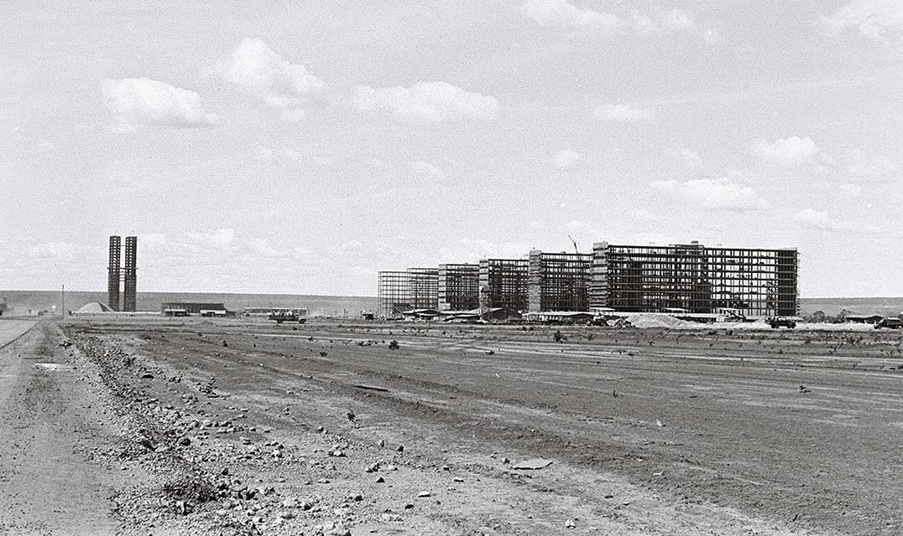

De Juscelino aos Candangos
Inaugurada em 21 de abril de 1960, Brasília foi construída em apenas 41 meses. O projeto foi uma iniciativa do presidente Juscelino Kubitschek para interiorizar o desenvolvimento do Brasil.
Com o Plano Piloto de Lúcio Costa e os traços de Oscar Niemeyer, a cidade tornou-se o maior exemplo de modernismo no mundo.